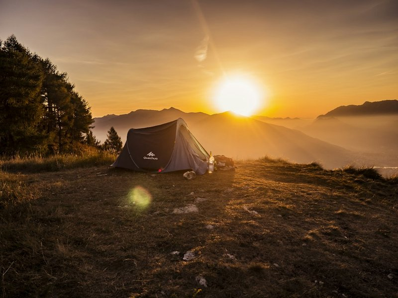

O naší chatě
Horská chata Vyhlídka se nachází v malebném a tichém prostředí Krkonoš v nadmořské výšce 1 150 metrů. Již po několik desetiletí poskytujeme spolehlivé útočiště pro milovníky hor, aktivní turisty, rodiny s dětmi i lyžaře, kteří hledají klidné a přátelské ubytování daleko od ruchu velkoměst, obklopené čistou přírodou a horským vzduchem.
Naše chata je ideálním výchozím bodem pro letní hřebenové výpravy i zimní lyžařské trasy. Po celodenním putování po horských stezkách oceníte hřejivou atmosféru u kachlových kamen v naší jídelně, posezení na venkovní terase s výhledem do údolí a poctivou domácí kuchyni připravovanou z čerstvých regionálních surovin.
